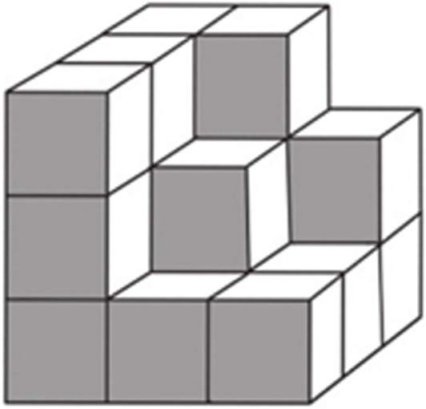
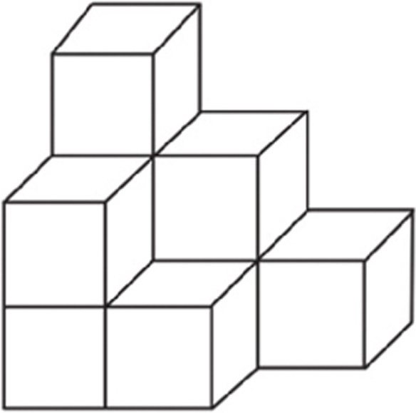
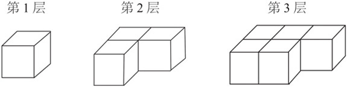
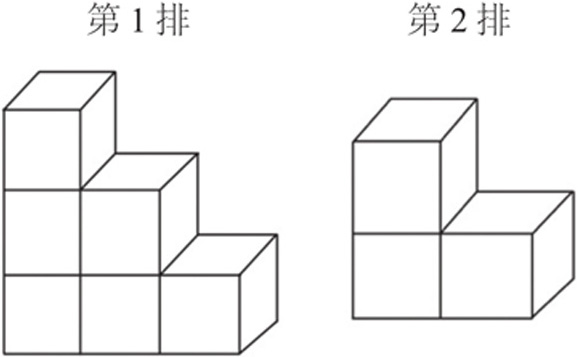
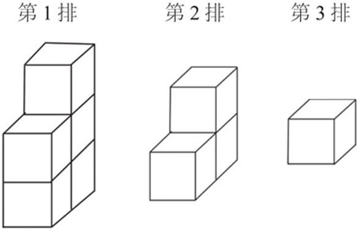
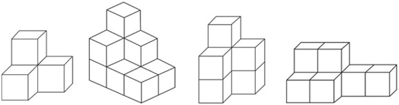
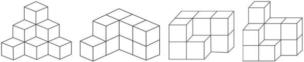
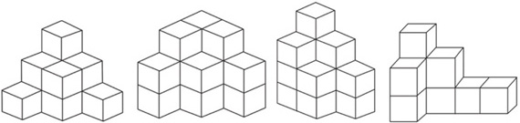
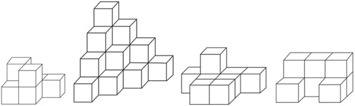
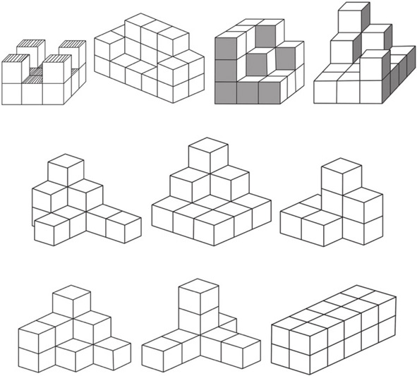

数方块通过分层或分排计数的方法培养孩子有序观察、有序列举的能力。同时，计算积木方块的数量，可以训练孩子的基本运算能力和简单的统计能力。
积木方块是孩子经常玩的玩具，当把这些积木方块整齐地堆放在一起的时候，孩子就需要发挥空间想象力，有次序地把方块数量数清楚。
将堆放在一起的积木方块，按层或者按排拆解。孩子可以一层一层地数，也可以一排一排地数。在这个基础之上，我们再总结相关的数数规律。

典型例题 请你数一数，下面的积木堆中有多少块积木方块呢？

我们运用把积木堆分层和分排的方法，数出每层或者每排的积木方块数量，把所有层或者所有排的积木方块数量相加就可以得到所有的积木方块数量了。对于上面的图形，有下面3种分法供参考。
（1）按层划分（上下划分）。

共有积木方块1+3+5=9块。
（2）按排划分（前后划分）。

共有积木方块6+3=9块。
（3）按排划分（左右划分）。

共有积木方块5+3+1=9块。
根据上面的解题过程，我们以按层计算为例来分析方块的数量规律。从上往下看。
第1层是没有被遮挡的方块，能够看到的方块数量就是实际的方块数量。
第2层能够看到的方块数量是2，被挡住的方块数量为1，正好为第1层的方块数量。
再看第3层，能够看到的方块数量为2，被挡住的方块数量为3，正好是第2层的方块数量。
以此类推，可以知道：如果按层来数方块，从上往下看，第1层的方块数量为该层实际方块数量，其他层的方块数量为本层能够看到的方块数量加上一层的方块数量。
这里一定要强调是从上往下看、从左往右看，还是从前往后看，一定是要在统一的视角下观察堆放的积木堆。
1.请你数一数，下面的积木堆中一共有多少块积木方块？

2.请你数一数，下面的积木堆中一共有多少块积木方块？

3.请你数一数，下面的积木堆中一共有多少块积木方块？

4.请你数一数，下面的积木堆中一共有多少块积木方块？

5.请你数一数，下面的积木堆中一共有多少块积木方块？
